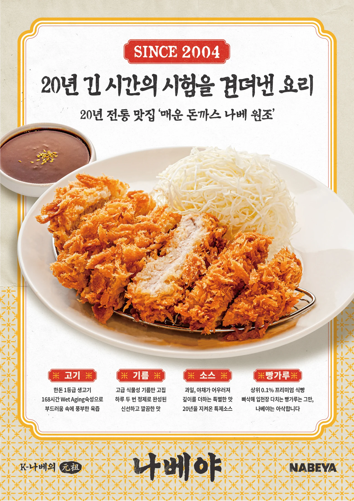
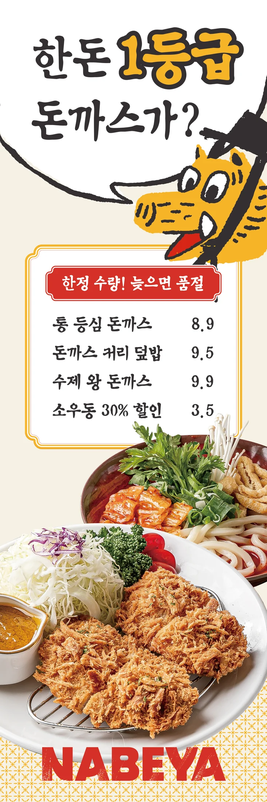
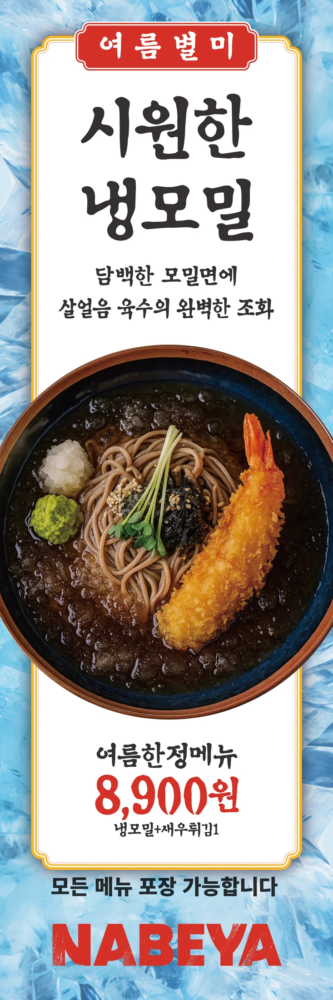

남다른 재료,
남다른 맛을 향한
01 · OUR STORY
브랜드 에센스
행복 幸福
나베야와 연결된 사람들, 나베야를 찾는 사람들에게
만족과 기쁨을 주기 위해 노력하는 브랜드
매일 먹어도 생각나고
매일 찾아도 부담없는
시대의 변화에도
결코 사라지지 않는


브랜드 에센스
나베야와 연결된 사람들, 나베야를 찾는 사람들에게
만족과 기쁨을 주기 위해 노력하는 브랜드
남다른 재료,
남다른 맛을 향한
매일 먹어도 생각나고
매일 찾아도 부담없는
시대의 변화에도
결코 사라지지 않는
뜨끈한 나베부터 바삭한 돈까스까지.
20년을 지켜온 나베야의 대표 메뉴입니다.

촉촉한 국물 속 바삭한 식감

100% 자연산 치즈의 깊은 풍미

720시간 숙성 김치의 진한 맛



계절마다 더 맛있는 한 그릇을 준비합니다.

변하지 않는 정성과 편안함으로
오늘도 따뜻한 한 끼를 만듭니다.